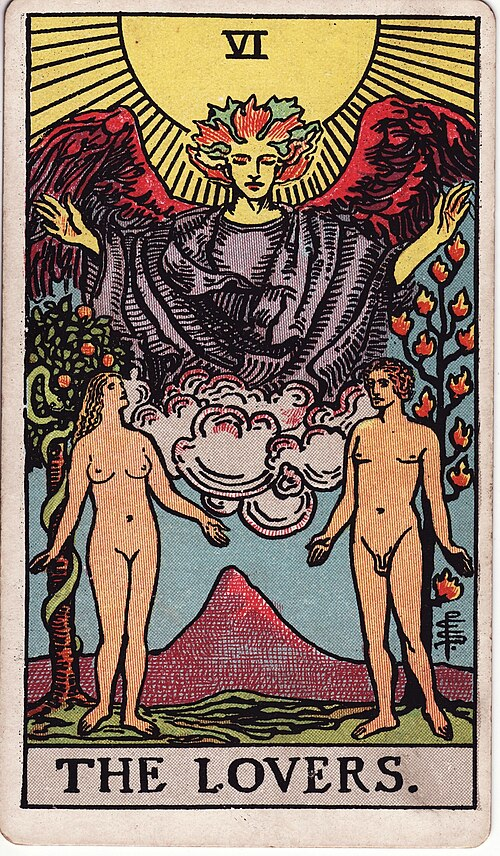

| Arcana | Major · VI |
| Suit | — |
| Element | Air |
| Attribution | Gemini |
The Lovers
In shortA choice about what you actually value.
Upright
This is more than romance. The Lovers is about a choice that defines who you are, which is why it turns up so often for decisions that look like relationships but are really about identity. Work out what you genuinely value, then choose in line with it. Where the card sits well, it also promises real partnership: two things that belong together, joined without either one shrinking.
Reversed
Something is out of line — either between you and another person, or between what you say you value and what you actually do each day. This card often marks a decision you have put off so long that circumstances are about to make it for you. It can also mean a connection where the attraction is real but you want different things from life, which is a harder problem than it first looks.
The turn
Name the value you are actually choosing for. The right decision usually becomes obvious once it is named.
Reading with your own deck?
Sage records the cards you actually pull, writes the reading, keeps every one, and shows you what keeps returning across them. Free, private, no account.